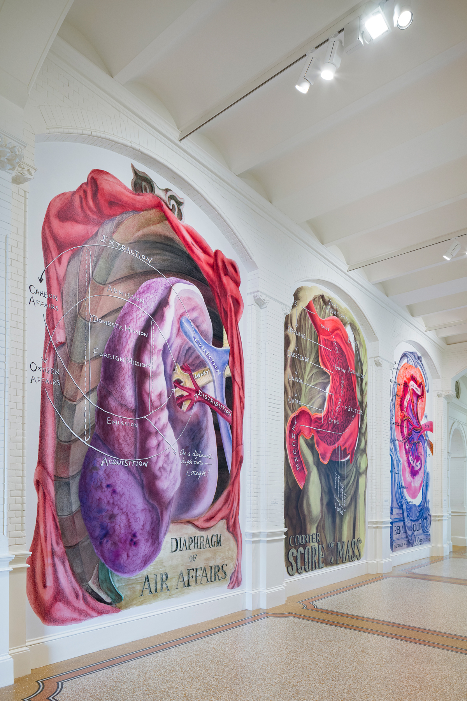
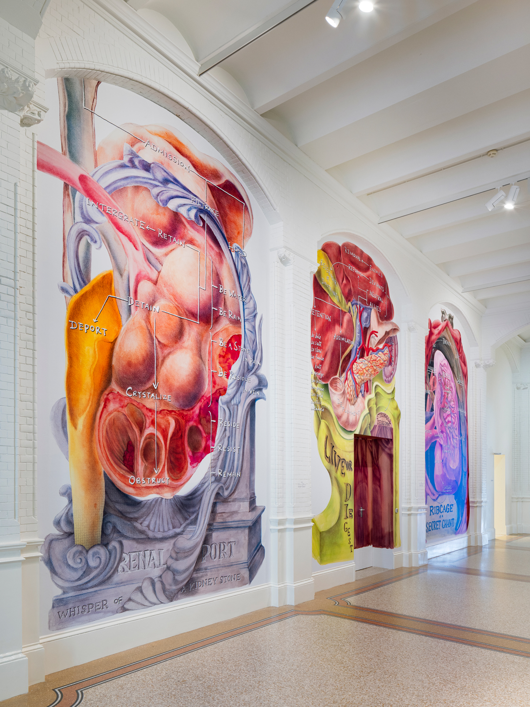
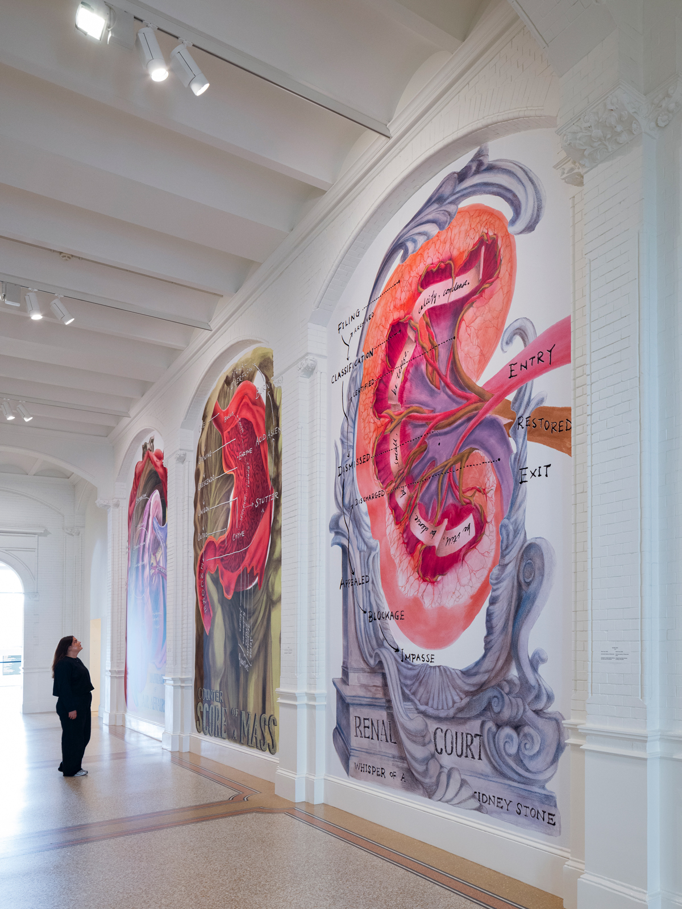
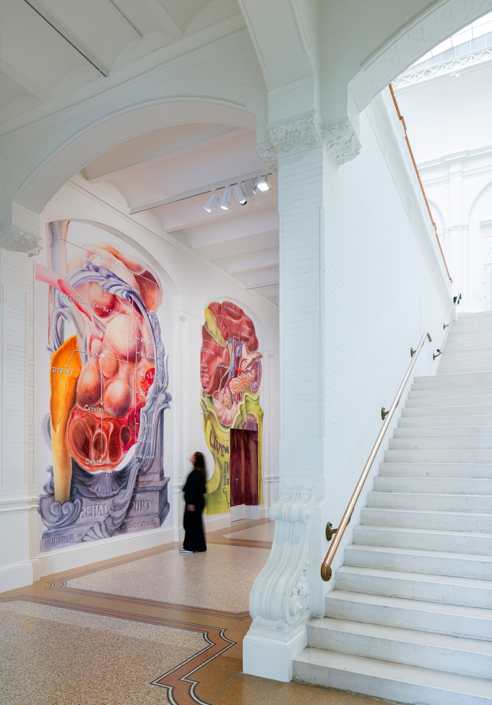
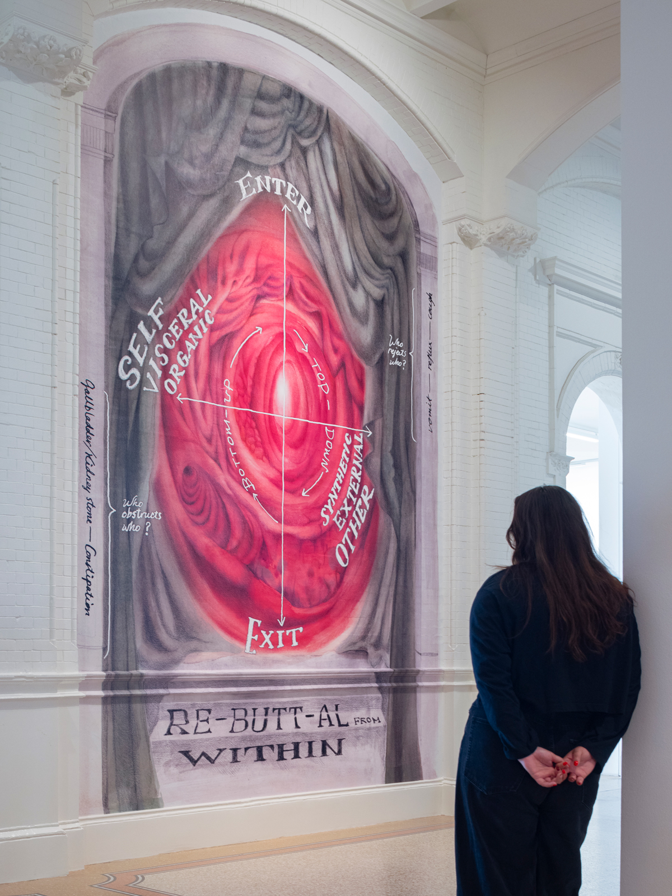

What if an institution had a body? In the seventh edition of Post/No/Bills, I transformed the corridor surrounding the Stedelijk’s historic staircase into exactly that: a body. For this site-specific installation, its niches are filled with hand-drawn murals of intestines, lungs, liver, stomach and kidneys, rendered larger than life. The organs become metaphors for institutional systems of filtration, regulation and legitimation, while bodily disorders give form to resistance and dissent. Moving from organ to organ, visitors trace how power is constructed and obstructed.
I have long been drawn to the overlap between organisations and organisms, and between how institutions and bodies function. I began by hand, creating anatomical drawings and diagrams before scaling them up to fill the niches of the corridor.
The sequence opens at the anus, presented as Rebuttal from Within. Whether this functions as the front desk or the back door remains ambiguous. The lungs, titled Air Affairs, form a house of diplomacy that cannot suppress a cough. Acid reflux rises from the stomach as Counter Score of a Mass, while a gallstone stands firmly within the liver’s political Struggle Session. The sequence closes with a kidney stone, the body’s final line of resistance to deportation from Renal Port. Through these bodily obstructions, resistance emerges from within the systems that seek to regulate and contain it. Hao invites visitors to consider what belongs to the body and what is treated as foreign, and how distinctions between health and illness can shape our understanding of the self and the other.
Anatomy of Obstruction
2026
drawing
installation
public space
Credits:
Commission:
Stedelijk Museum Amsterdam
Curator
Thomas Castro
Scan:
Design Museum Dedel
Printing:
Riwi Collotype




